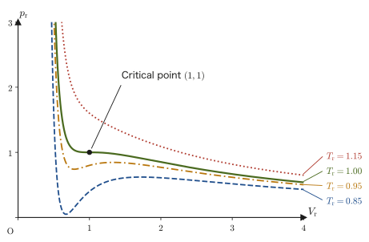
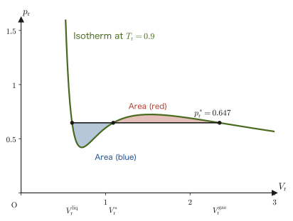
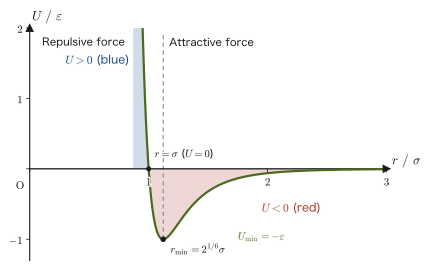
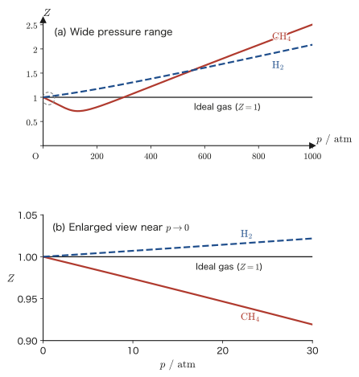
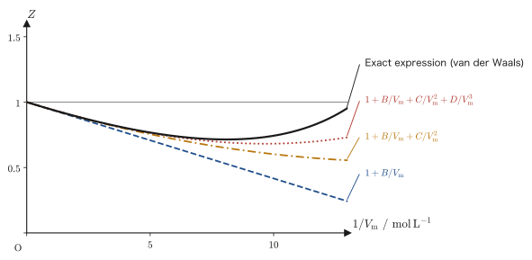
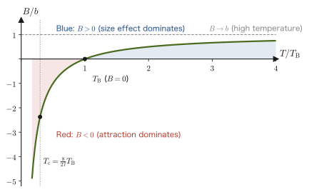

Chapter 25Real Gases — The Principle of Corresponding States, the Compression Factor, and the Virial Expansion
In the previous chapter, we studied the van der Waals equation of state $(p+a/V^2)(V-b)=RT$ (per mole), which adds to the ideal gas law $pV=nRT$ two “real-world effects” as corrections: the size of the molecules themselves (the volume $b$) and the intermolecular force (the strength of attraction $a$). This equation naturally contained, within its mathematics, the fact that as the temperature is lowered, a gas turns into a liquid at a certain temperature, pressure, and volume (the critical point)—a phenomenon that can never occur for an ideal gas. In this chapter we examine this equation of state for real gases more deeply.
First we meet a surprising fact: the values of $a,b$ are completely different from substance to substance, whether helium or carbon dioxide, yet when we re-measure pressure, volume, and temperature as “ratios to the critical point” (reduced variables), every gas obeys one and the same equation of state (as long as it obeys the van der Waals equation of state). For real gases, too, this relation holds well as an approximation; it is called the principle of corresponding states. Next, we deal with the problem that, when $T$ is below the critical temperature, the van der Waals equation of state gives unnatural “S-shaped” isotherms. We resolve it by means of Maxwell's equal-area rule, and learn how to find the pressure at which a gas turns into a liquid (the liquid–vapor coexistence pressure).
In the second half, we study the compression factor (compressibility factor) $Z=pV/(nRT)$, which expresses in a single quantity how far a real gas deviates from an ideal gas, and the virial equation of state, which extends the ideal gas law to a “power series in $1/V_{\mathrm m}$.” We calculate concretely how the coefficient of the second term of the virial expansion (the second virial coefficient $B$) is connected to the van der Waals constants $a,b$, and we come to understand what the special temperature at which $B=0$—the Boyle temperature—means for the properties of real gases.
- The definitions of the reduced variables $p_{\mathrm r}=p/p_{\mathrm c},\ V_{\mathrm r}=V/V_{\mathrm c},\ T_{\mathrm r}=T/T_{\mathrm c}$, and the derivation of the reduced equation of state $(p_{\mathrm r}+3/V_{\mathrm r}^2)(3V_{\mathrm r}-1)=8T_{\mathrm r}$ (the principle of corresponding states), obtained by rewriting the van der Waals equation of state in terms of them
- Why the van der Waals isotherms become S-shaped below the critical temperature, and how to derive Maxwell's equal-area rule from the condition of equal Gibbs energy (Gibbs free energy) and use it to find the liquid–vapor coexistence pressure
- The definition of the compression factor $Z=pV/(nRT)$, and the fact that $Z\gtrless1$ indicates which is dominant, the intermolecular force or the size of the molecules
- The definition of the virial equation of state $pV_{\mathrm m}=RT(1+B/V_{\mathrm m}+C/V_{\mathrm m}^2+\cdots)$, and the proof that, at any pressure and volume, a real gas necessarily deviates from an ideal gas
- Expanding the van der Waals equation of state as a power series in $1/V_{\mathrm m}$ to find the second virial coefficient $B=b-a/(RT)$, and deriving the Boyle temperature $T_{\mathrm B}=a/(Rb)$ at which $B=0$
Source notes: Yasuhide Mochizuki, Physics Notes: Thermodynamics, pp. 18–24 (pp. 21 and 24 are blank).
25.1 The Principle of Corresponding States and the Reduced Equation of State
In this section, as preparation for the two tools that express deviations from the ideal gas (in the following sections), we rewrite the van der Waals equation of state in terms of dimensionless variables measured from the critical point (reduced variables), which gives the reduced equation of state and the principle of corresponding states. We then derive Maxwell's rule, which determines the liquid–vapor coexistence pressure from the S-shaped isotherms that appear below the critical temperature. Unless otherwise stated, in this section, as in the previous chapter, $V$ denotes the volume per $1\ \mathrm{mol}$ of gas (the molar volume).
25.1.1 Reduced variables and the principle of corresponding states
As we saw in the previous chapter, the van der Waals equation of state
\begin{equation} \left(p+\frac{a}{V^2}\right)(V-b)=RT \label{eq:25-vdw-recall} \end{equation}has two constants that differ from substance to substance: $a\ [\mathrm{Pa\,m^6/mol^2}]$ (the strength of the intermolecular force) and $b\ [\mathrm{m^3/mol}]$ (the size of the molecules themselves). For example, helium has a very small $a$, while carbon dioxide has a large $a$—this is only natural, since the strength of the attraction differs from molecule to molecule. Yet when we take as the reference the critical point (the inflection point, derived in the previous chapter, at which the isotherm has a horizontal tangent, that is, the special point where $\partial p/\partial V=0$ and $\partial^2p/\partial V^2=0$ both hold)
\begin{equation} V_{\mathrm c}=3b,\qquad T_{\mathrm c}=\frac{8a}{27Rb},\qquad p_{\mathrm c}=\frac{a}{27b^2} \label{eq:25-critical-recall} \end{equation}and re-measure pressure, volume, and temperature as ratios—how many times the critical value each one is—something surprising happens. The critical point is a special point at which the distinction between gas and liquid disappears, and it is easy to measure experimentally for each substance. We use it as a common reference scale.
Definition 25.1: Reduced variables
The dimensionless quantities obtained by dividing the pressure $p$, volume $V$ (molar volume), and temperature $T$ of a gas by that gas's own critical pressure $p_{\mathrm c}$, critical volume $V_{\mathrm c}$, and critical temperature $T_{\mathrm c}$
\begin{equation} p_{\mathrm r}\equiv\frac{p}{p_{\mathrm c}},\qquad V_{\mathrm r}\equiv\frac{V}{V_{\mathrm c}},\qquad T_{\mathrm r}\equiv\frac{T}{T_{\mathrm c}} \label{eq:25-reduced-vars} \end{equation}are called the reduced pressure, the reduced volume, and the reduced temperature, respectively. Note that $p_{\mathrm r},V_{\mathrm r},T_{\mathrm r}$ are all pure numbers without units (the division is by a quantity with the same units as $p_{\mathrm c}$ itself, so the units cancel).
The word “reduced” means that the original quantity is “reduced” to a dimensionless ratio; it does not mean that anything is made smaller.
Let us actually calculate what Eq. \eqref{eq:25-vdw-recall} becomes when it is rewritten in terms of the reduced variables.
25.1.2 Derivation of the reduced van der Waals equation of state
Derivation: The reduced van der Waals equation of state
Rewriting Eq. \eqref{eq:25-reduced-vars} gives $p=p_{\mathrm r}p_{\mathrm c},\ V=V_{\mathrm r}V_{\mathrm c},\ T=T_{\mathrm r}T_{\mathrm c}$. We substitute these into Eq. \eqref{eq:25-vdw-recall}, together with the expressions for the critical constants in Eq. \eqref{eq:25-critical-recall}. First, the $a/V^2$ term on the left-hand side becomes
$$ \frac{a}{V^2}=\frac{a}{(V_{\mathrm r}V_{\mathrm c})^2}=\frac{a}{V_{\mathrm r}^2(3b)^2}=\frac{a}{9b^2V_{\mathrm r}^2} $$Rewriting this with $p_{\mathrm c}=a/(27b^2)$, that is, $a/b^2=27p_{\mathrm c}$, we obtain
$$ \frac{a}{V^2}=\frac{27p_{\mathrm c}}{9V_{\mathrm r}^2}=\frac{3p_{\mathrm c}}{V_{\mathrm r}^2} $$so the first factor on the left-hand side of Eq. \eqref{eq:25-vdw-recall} is put together as
$$ p+\frac{a}{V^2}=p_{\mathrm r}p_{\mathrm c}+\frac{3p_{\mathrm c}}{V_{\mathrm r}^2}=p_{\mathrm c}\left(p_{\mathrm r}+\frac{3}{V_{\mathrm r}^2}\right) $$Next, using $V_{\mathrm c}=3b$, the second factor on the left-hand side is
$$ V-b=V_{\mathrm r}V_{\mathrm c}-b=3bV_{\mathrm r}-b=b(3V_{\mathrm r}-1) $$Therefore the whole left-hand side is
$$ \left(p+\frac{a}{V^2}\right)(V-b)=p_{\mathrm c}\left(p_{\mathrm r}+\frac{3}{V_{\mathrm r}^2}\right)\cdot b(3V_{\mathrm r}-1)=p_{\mathrm c}b\left(p_{\mathrm r}+\frac{3}{V_{\mathrm r}^2}\right)(3V_{\mathrm r}-1) $$and substituting $p_{\mathrm c}=a/(27b^2)$ gives $p_{\mathrm c}b=a/(27b)$. On the other hand, using $T_{\mathrm c}=8a/(27Rb)$, the right-hand side becomes
$$ RT=RT_{\mathrm r}T_{\mathrm c}=RT_{\mathrm r}\cdot\frac{8a}{27Rb}=\frac{8a}{27b}T_{\mathrm r} $$Setting the left-hand side $=$ the right-hand side, we have
$$ \frac{a}{27b}\left(p_{\mathrm r}+\frac{3}{V_{\mathrm r}^2}\right)(3V_{\mathrm r}-1)=\frac{8a}{27b}T_{\mathrm r} $$and dividing both sides by the factor $a/(27b)$ that is common to both sides (and depends on $a,b$), we finally obtain an equation in which neither $a$ nor $b$ appears anywhere:
\begin{equation} \left(p_{\mathrm r}+\frac{3}{V_{\mathrm r}^2}\right)(3V_{\mathrm r}-1)=8T_{\mathrm r} \label{eq:25-reduced-vdw} \end{equation}Dimension check: $p_{\mathrm r},V_{\mathrm r},T_{\mathrm r}$ are all dimensionless (Definition 25.1), and $3$, $1$, $8$ are also pure numbers, so both sides of Eq. \eqref{eq:25-reduced-vdw} are dimensionless. This is consistent with the fact that $a,b,R$, which carry units, no longer remain in the equation.
∎
Eq. \eqref{eq:25-reduced-vdw} is called the reduced equation of state. Note that nowhere in this equation do the substance-specific constants $a,b$ (and hence not even $R$) remain: as long as we measure in the reduced variables $p_{\mathrm r},V_{\mathrm r},T_{\mathrm r}$, helium, carbon dioxide, and water alike (assuming that they obey the van der Waals equation of state) obey exactly the same single equation of state. This is the principle of corresponding states.
Law 25.1: Principle of corresponding states
When different gases are expressed in terms of the reduced variables $p_{\mathrm r}=p/p_{\mathrm c},\ V_{\mathrm r}=V/V_{\mathrm c},\ T_{\mathrm r}=T/T_{\mathrm c}$, each referred to that gas's own critical pressure, critical volume, and critical temperature, all gases obey an equation of state of the same form. For a gas obeying the van der Waals equation of state, it is Eq. \eqref{eq:25-reduced-vdw}. In other words, when two different gases are in states with the same reduced temperature and reduced pressure (and hence, through Eq. \eqref{eq:25-reduced-vdw}, the same reduced volume), the two are said to be in “corresponding states,” and they show similar behavior (a similar compression factor $Z$, a similar position on the phase diagram).
However, this holds exactly only for gases that obey an equation of state with just two substance-specific constants (such as the van der Waals equation). For real gases it holds only approximately. For example, the compression factor at the critical point, $Z_{\mathrm c}=p_{\mathrm c}V_{\mathrm c}/(RT_{\mathrm c})$ (Section 25.2), is $3/8=0.375$ for a van der Waals gas regardless of the substance (Exercise 25.2), but the measured value is about $0.27$–$0.29$ for many gases. For light gases such as hydrogen and helium, the deviation is even larger because of quantum effects. Even so, it is known that when the $Z$ of real gases is organized in terms of reduced variables, many gases come close to following a single curve (the generalized compression factor chart, Section 25.2), and when higher accuracy is wanted, a third parameter such as the acentric factor is added.
Intuition: Why do the van der Waals constants disappear?
Looking back over the derivation of Eq. \eqref{eq:25-reduced-vdw}, the trick by which $a,b$ disappeared is that the critical constants $p_{\mathrm c},V_{\mathrm c},T_{\mathrm c}$ themselves could be written as combinations of $a,b,R$. The reduced variables are, so to speak, “pressure, volume, and temperature measured with that gas's own yardsticks ($p_{\mathrm c},V_{\mathrm c},T_{\mathrm c}$),” so the information about the size of the molecules and the strength of the attraction, which differs from gas to gas, has already been “woven into” the yardsticks. An analogy with the scale of a map makes this easy to understand. A map of Japan and a map of Australia represent countries of completely different actual sizes, but if each is drawn with the size of its country set to 1, the two look the same size. The quantities $a,b$ determine each gas's “scale” (the size of the graduations of $p,V,T$), and dividing by the critical constants cancels that scale.

Example 25.1: How the critical point looks in reduced variables
Confirm that the state of the critical point itself, that is, $p=p_{\mathrm c},V=V_{\mathrm c},T=T_{\mathrm c}$, is expressed in reduced variables as $(p_{\mathrm r},V_{\mathrm r},T_{\mathrm r})=(1,1,1)$, and check that it satisfies the reduced equation of state, Eq. \eqref{eq:25-reduced-vdw}.
Solution. Substituting $p=p_{\mathrm c},V=V_{\mathrm c},T=T_{\mathrm c}$ into Definition 25.1 gives $p_{\mathrm r}=p_{\mathrm c}/p_{\mathrm c}=1$, $V_{\mathrm r}=V_{\mathrm c}/V_{\mathrm c}=1$, $T_{\mathrm r}=T_{\mathrm c}/T_{\mathrm c}=1$, so indeed it is $(1,1,1)$. Substituting this into the left-hand and right-hand sides of Eq. \eqref{eq:25-reduced-vdw}, we get
$$ \text{left-hand side}=\left(1+\frac{3}{1^2}\right)(3\cdot1-1)=4\times2=8,\qquad \text{right-hand side}=8\times1=8 $$which agree. For any gas, the critical point, measured in reduced variables, gathers at this same single point $(1,1,1)$—this too is a consequence of the principle of corresponding states.
Next, let us also check that this point is a horizontal inflection point of the isotherm ($\partial p_{\mathrm r}/\partial V_{\mathrm r}=0$ and $\partial^2p_{\mathrm r}/\partial V_{\mathrm r}^2=0$). Since we differentiate with respect to $V_{\mathrm r}$ while keeping $T_{\mathrm r}$ constant, ordinary differentiation suffices. Writing the reduced equation of state as $p_{\mathrm r}=8T_{\mathrm r}/(3V_{\mathrm r}-1)-3/V_{\mathrm r}^2$ and differentiating with the help of $\dd(3V_{\mathrm r}-1)/\dd V_{\mathrm r}=3$, we get
$$ \frac{\dd p_{\mathrm r}}{\dd V_{\mathrm r}}=-\frac{24T_{\mathrm r}}{(3V_{\mathrm r}-1)^2}+\frac{6}{V_{\mathrm r}^3},\qquad \frac{\dd^2p_{\mathrm r}}{\dd V_{\mathrm r}^2}=\frac{144T_{\mathrm r}}{(3V_{\mathrm r}-1)^3}-\frac{18}{V_{\mathrm r}^4} $$Substituting $V_{\mathrm r}=T_{\mathrm r}=1$ gives $-24/4+6=-6+6=0$ and $144/8-18=18-18=0$, so both are $0$. That is, even when measured in reduced variables, the critical point $(1,1,1)$ is a horizontal inflection point of the isotherm, and the fact that the critical point becomes a universal single point in reduced variables has been confirmed from what Eq. \eqref{eq:25-reduced-vdw} itself says.
Example 25.2: Reduced variables and corresponding states for nitrogen gas
The van der Waals constants of nitrogen $\mathrm{N_2}$ are, as we saw in the previous chapter, $a=0.137\ \mathrm{Pa\,m^6/mol^2}$ and $b=3.87\times10^{-5}\ \mathrm{m^3/mol}$. (1) Find the reduced temperature $T_{\mathrm r}$ and the reduced pressure $p_{\mathrm r}$ of nitrogen gas at temperature $T=300\ \mathrm K$ and pressure $p=10\ \mathrm{atm}$ ($1\ \mathrm{atm}=101325\ \mathrm{Pa}$). (2) Find the temperature and pressure of carbon dioxide $\mathrm{CO_2}$ (critical constants $T_{\mathrm c}=304.1\ \mathrm K$, $p_{\mathrm c}=7.38\ \mathrm{MPa}$) in the same reduced state as this nitrogen, and verify that the reduced volume $V_{\mathrm r}$ and the compression factor $Z$ of the two gases are equal.
Solution. (1) First we find the critical constants from Eq. \eqref{eq:25-critical-recall}. With $R=8.314\ \mathrm{J/(mol\,K)}$,
$$ T_{\mathrm c}=\frac{8a}{27Rb}=\frac{8\times0.137}{27\times8.314\times3.87\times10^{-5}}\ \mathrm K\approx126.2\ \mathrm K $$ $$ p_{\mathrm c}=\frac{a}{27b^2}=\frac{0.137}{27\times(3.87\times10^{-5})^2}\ \mathrm{Pa}\approx3.388\times10^{6}\ \mathrm{Pa}\approx33.4\ \mathrm{atm} $$(The measured values are $T_{\mathrm c}\approx126.2\ \mathrm K$ and $p_{\mathrm c}\approx33.5\ \mathrm{atm}$. However, since the van der Waals constants $a,b$ are usually values determined so as to fit the measured $T_{\mathrm c},p_{\mathrm c}$, it is only natural that these agree closely with the measurements, and this does not constitute a test of the model. The real test of the model is the critical compression factor $Z_{\mathrm c}=p_{\mathrm c}V_{\mathrm c}/(RT_{\mathrm c})$. The van der Waals prediction is $3/8=0.375$, which is larger than the measured value of around $0.29$ for nitrogen, so the model somewhat overestimates the critical volume.) Next, from Definition 25.1,
$$ T_{\mathrm r}=\frac{T}{T_{\mathrm c}}=\frac{300}{126.2}\approx2.38,\qquad p_{\mathrm r}=\frac{p}{p_{\mathrm c}}=\frac{10\ \mathrm{atm}}{33.4\ \mathrm{atm}}\approx0.299 $$Since $T_{\mathrm r}\approx2.4$ is more than twice the critical temperature, this nitrogen lies in the ordinary gas region, where it does not become a liquid no matter how much it is compressed (the isotherm is not S-shaped).
(2) The same reduced state means $T_{\mathrm r}\approx2.38,\ p_{\mathrm r}\approx0.299$. Using Definition 25.1 in the form $T=T_{\mathrm r}T_{\mathrm c}$, $p=p_{\mathrm r}p_{\mathrm c}$, for carbon dioxide we obtain
$$ T=2.378\times304.1\ \mathrm K\approx723\ \mathrm K,\qquad p=0.299\times7.38\ \mathrm{MPa}\approx2.2\ \mathrm{MPa}\ (\approx22\ \mathrm{atm}) $$That is, the “corresponding state” to nitrogen at $300\ \mathrm K$ and $10\ \mathrm{atm}$ is, for carbon dioxide, about $723\ \mathrm K$ ($450\ {}^\circ\mathrm C$) and about $22\ \mathrm{atm}$. The reduced volume takes the same value for both gases, since the same $(p_{\mathrm r},T_{\mathrm r})$ is substituted into Eq. \eqref{eq:25-reduced-vdw}. Solving the cubic equation $3p_{\mathrm r}V_{\mathrm r}^3-(p_{\mathrm r}+8T_{\mathrm r})V_{\mathrm r}^2+9V_{\mathrm r}-3=0$, which has the same form as the one in Example 25.3, gives just one real solution, $V_{\mathrm r}\approx21.07$. Substituting $p=p_{\mathrm r}p_{\mathrm c},\ V=V_{\mathrm r}V_{\mathrm c},\ T=T_{\mathrm r}T_{\mathrm c}$ into $Z=pV/(RT)$ and using $Z_{\mathrm c}=p_{\mathrm c}V_{\mathrm c}/(RT_{\mathrm c})=3/8$, the compression factor is
$$ Z=\frac{p_{\mathrm r}p_{\mathrm c}\,V_{\mathrm r}V_{\mathrm c}}{R\,T_{\mathrm r}T_{\mathrm c}}=Z_{\mathrm c}\,\frac{p_{\mathrm r}V_{\mathrm r}}{T_{\mathrm r}}=\frac38\times\frac{0.299\times21.07}{2.378}\approx0.994 $$which is again the same for the two gases. In both, the deviation from an ideal gas is only about $0.6\ \%$. Thus it has been confirmed numerically that even for gases with completely different $a,b$, the same reduced state gives the same $V_{\mathrm r}$ and the same $Z$. By the principle of corresponding states, any gas in the same reduced state, $T_{\mathrm r}\approx2.4,\ p_{\mathrm r}\approx0.30$, should have nearly the same compression factor $Z$ (Section 25.2) as nitrogen.
Application: The principle of corresponding states and supercritical fluids
The principle of corresponding states is an important guide in engineering as well. For example, carbon dioxide has a critical point close to room temperature, with $T_{\mathrm c}\approx304\ \mathrm K$ (about $31\ {}^\circ\mathrm C$) and $p_{\mathrm c}\approx7.4\ \mathrm{MPa}$ (about $73\ \mathrm{atm}$). In the “supercritical” region $T_{\mathrm r}\gtrsim1,\ p_{\mathrm r}\gtrsim1$, the distinction between gas and liquid disappears, and the substance becomes a special fluid that diffuses into every corner like a gas while dissolving other substances well like a liquid. This supercritical carbon dioxide is actually used to extract caffeine from coffee beans and as a solvent for dry cleaning. What the principle of corresponding states tells us is that if we create a similar reduced state, we can expect similar supercritical behavior even from a fluid other than carbon dioxide (even from some other fluid with low toxicity and low environmental impact).
25.1.3 S-shaped isotherms and Maxwell's rule
Let us look at Figure 25.1 once more. The isotherms at or above the critical temperature ($T_{\mathrm r}\ge1$) have the same “plain” shape as the isotherm of an ideal gas, in which increasing $V_{\mathrm r}$ makes $p_{\mathrm r}$ decrease monotonically (smoothly). The isotherms below the critical temperature ($T_{\mathrm r}\lt1$), on the other hand, have a shape with an S-shaped dent: they go down, then up, and then down again gently. Let us check with concrete numbers what this strange shape means.
Example 25.3: Reduced volume for a given reduced pressure and reduced temperature
For reduced temperature $T_{\mathrm r}=0.9$ and reduced pressure $p_{\mathrm r}=0.65$, find all reduced volumes $V_{\mathrm r}$ that satisfy the reduced equation of state, Eq. \eqref{eq:25-reduced-vdw}.
Solution. We expand the left-hand side of Eq. \eqref{eq:25-reduced-vdw}. Expanding both sides of $(p_{\mathrm r}V_{\mathrm r}^2+3)(3V_{\mathrm r}-1)=8T_{\mathrm r}V_{\mathrm r}^2$ and arranging the result as a cubic equation in $V_{\mathrm r}$, we obtain
$$ 3p_{\mathrm r}V_{\mathrm r}^3-(p_{\mathrm r}+8T_{\mathrm r})V_{\mathrm r}^2+9V_{\mathrm r}-3=0 $$(we have simply compared the two sides and collected the coefficients of $V_{\mathrm r}^3,V_{\mathrm r}^2,V_{\mathrm r}^1,V_{\mathrm r}^0$). Substituting $p_{\mathrm r}=0.65,\ T_{\mathrm r}=0.9$, we obtain
$$ 1.95\,V_{\mathrm r}^3-7.85\,V_{\mathrm r}^2+9V_{\mathrm r}-3=0 $$This is a cubic equation. A cubic equation has either one or three real solutions (because complex solutions appear in conjugate pairs). Letting $f(V_{\mathrm r})$ denote the left-hand side, we look for the places where the sign changes.
| $V_{\mathrm r}$ | $0.5$ | $0.7$ | $1.0$ | $1.2$ | $2.0$ | $2.5$ |
|---|---|---|---|---|---|---|
| $f(V_{\mathrm r})$ | $-0.219$ | $+0.123$ | $+0.100$ | $-0.134$ | $-0.800$ | $+0.906$ |
Since the sign changes three times, $-\to+\to-\to+$, the intermediate value theorem (if a continuous function has opposite signs at the two ends of an interval, it equals $0$ somewhere in that interval) shows that there is at least one solution in each of the intervals $(0.5,\,0.7)$, $(1.0,\,1.2)$, and $(2.0,\,2.5)$. A cubic equation has at most three solutions, so these are all of them. Narrowing down each interval by the bisection method (the procedure of halving the interval and keeping the half in which the sign changes) or by Newton's method, we obtain
$$ V_{\mathrm r}\approx0.603,\qquad V_{\mathrm r}\approx1.097,\qquad V_{\mathrm r}\approx2.325 $$These are the three real solutions. For example, substituting $V_{\mathrm r}=0.603$ gives $f(0.603)\approx0.0002$, which is almost $0$, so it is indeed a solution. At or above the critical temperature ($T_{\mathrm r}\ge1$), the same calculation yields only one real solution, whereas when $T_{\mathrm r}\lt1$ and $p_{\mathrm r}$ lies in a suitable range (for $T_{\mathrm r}=0.9$, approximately $0.42\lt p_{\mathrm r}\lt0.72$; this range will be found in Example 25.4), three real solutions appear as here—this corresponds to the fact that the S-shaped isotherm in Figure 25.3 crosses the horizontal line $p_{\mathrm r}=0.65$ three times.
Caution: The middle solution is not physically realized
Of the three solutions obtained in Example 25.3, the middle one, $V_{\mathrm r}\approx1.097$, lies in the interval from the valley (minimum) to the peak (maximum) of the S-shaped isotherm in Figure 25.3, that is, in the interval in which increasing $V_{\mathrm r}$ also increases $p_{\mathrm r}$ ($\dd p/\dd V\gt0$ at constant $T$). A state in which the pressure also increases when the volume is increased is mechanically unstable (if even a slight fluctuation that increases the volume occurs, the resulting change in pressure acts to amplify that fluctuation further, and the system either collapses or expands explosively). Therefore the middle solution is merely a mathematical solution that is not realized in any experiment. The remaining two solutions, $V_{\mathrm r}\approx0.603$ and $2.325$, correspond to a “densely packed liquid” and a “thinly spread gas,” respectively. But which of these two is actually realized—or is the value of the pressure $p_{\mathrm r}=0.65$ itself even correct as a coexistence pressure in the first place? Answering this is the role of Maxwell's rule, which we derive next.
Let us sort out which parts of the S-shaped isotherm are realized. The two points, the valley (minimum) and the peak (maximum), at which $\dd p/\dd V=0$ are called the spinodal points. The interval between them ($\dd p/\dd V\gt0$) is mechanically unstable and is not realized under any conditions. Outside the spinodal points the states are mechanically stable, but not all of them are necessarily thermodynamic equilibrium states. The states between the spinodal points and the coexistence points determined by Maxwell's rule, which is described next (the liquid side $V_{\mathrm r}^{\mathrm{liq}}$ and the gas side $V_{\mathrm r}^{\mathrm{gas}}$; these are the outer two of the three solutions, as in Example 25.3), namely $0.603\lt V_{\mathrm r}\lt0.719$ and $1.529\lt V_{\mathrm r}\lt2.349$ for $T_{\mathrm r}=0.9$, are metastable states (superheated liquid and supersaturated vapor): with careful experiments they can be realized for a short time, but a slight trigger changes them into a state of liquid–vapor coexistence. The only parts of the S-shaped curve that can be used as they are for a stable liquid or gas are $V_{\mathrm r}\lt V_{\mathrm r}^{\mathrm{liq}}$ (liquid) and $V_{\mathrm r}\gt V_{\mathrm r}^{\mathrm{gas}}$ (gas) (summarized in Figure 25.4). The actual isotherm that connects them (the one obtained when we measure it experimentally) does not trace the peak and valley of the S, but instead becomes a horizontal segment on which only the volume changes at a certain constant pressure—this is the “liquid–vapor coexistence” segment, in which gas and liquid exist simultaneously at that pressure (Figure 25.2). Maxwell's rule is what determines at which height (that is, at which pressure) this horizontal segment should be drawn.
Preview: Gibbs energy and the condition for phase equilibrium
We borrow just one idea needed here, ahead of its formal definition. At constant temperature and constant pressure, a substance exists stably in the state in which its Gibbs energy (Gibbs free energy) $G$ (a state quantity, to be defined formally in a later chapter, constructed from the enthalpy $H$ and the entropy $S$ as $G=H-TS$) is at its minimum. For two phases (liquid and gas) to coexist stably at the same temperature and the same pressure, the Gibbs energy per mole, $G_{\mathrm m}$, must be equal in the liquid and in the gas (if they differed, all the substance would move to the phase with the lower Gibbs energy, and coexistence would be impossible). Also, at constant temperature the total differential of the Gibbs energy becomes $\dd G=V\,\dd p$ (this too is what the relation derived in general form as $\dd G=-S\,\dd T+V\,\dd p$ in a later chapter becomes when $\dd T=0$). For an ideal gas, for example, substituting $V_{\mathrm m}=RT/p$ and integrating gives $G_{\mathrm m}=G^{\circ}+RT\ln(p/p^{\circ})$ ($G^{\circ}$ is the value at a reference pressure $p^{\circ}$). In what follows we use only these two facts—① at constant temperature, phase equilibrium means that $G_{\mathrm m}$ is equal in the two phases, and ② at constant temperature, $\dd G_{\mathrm m}=V\,\dd p$.
Derivation: Maxwell's equal-area rule
On the isotherm at some temperature $T\ (\lt T_{\mathrm c})$, let the state of the liquid be point A (volume $V_{\mathrm A}$) and the state of the gas be point B (volume $V_{\mathrm B}$), and suppose that A and B are at the same pressure $p^{*}$ (the liquid–vapor coexistence pressure). The condition for A and B to coexist stably is, as stated above, $G_{\mathrm m}(\mathrm A)=G_{\mathrm m}(\mathrm B)$. That is,
$$ G_{\mathrm m}(\mathrm B)-G_{\mathrm m}(\mathrm A)=0 $$must hold. Since $G_{\mathrm m}$ is a state quantity (a quantity determined by the state alone, independent of the path by which the state was reached), the difference between A and B is the same whichever path we integrate along. We therefore integrate continuously along the van der Waals isotherm $p(V)$, which is easy to compute with (it does not matter if the curve passes through states that are not realized, as long as it is used as a mathematical path of integration). Writing the left-hand side as an integral from A to B, we have
\begin{equation} G_{\mathrm m}(\mathrm B)-G_{\mathrm m}(\mathrm A)=\int_{\mathrm A}^{\mathrm B}\dd G_{\mathrm m}=\int_{V_{\mathrm A}}^{V_{\mathrm B}}V\,\frac{\dd p}{\dd V}\,\dd V \label{eq:25-maxwell-integral0} \end{equation}(since the process is isothermal, we used $\dd G_{\mathrm m}=V\,\dd p$, and by writing $\dd p=(\dd p/\dd V)\dd V$ we made $V$ the variable of integration throughout). We rewrite this integral by integration by parts, which you have already met in high school mathematics ($\displaystyle\int u\,\frac{\dd v}{\dd V}\dd V=\Bigl[uv\Bigr]-\displaystyle\int v\,\frac{\dd u}{\dd V}\dd V$, with $u=V,\ v=p$):
$$ \int_{V_{\mathrm A}}^{V_{\mathrm B}}V\,\frac{\dd p}{\dd V}\,\dd V=\Bigl[V\,p(V)\Bigr]_{V_{\mathrm A}}^{V_{\mathrm B}}-\int_{V_{\mathrm A}}^{V_{\mathrm B}}p(V)\,\dd V $$Since the points A and B are both at pressure $p^{*}$, we have $\bigl[Vp(V)\bigr]_{V_{\mathrm A}}^{V_{\mathrm B}}=V_{\mathrm B}p^{*}-V_{\mathrm A}p^{*}=p^{*}(V_{\mathrm B}-V_{\mathrm A})$. Therefore the right-hand side of Eq. \eqref{eq:25-maxwell-integral0} becomes
$$ p^{*}(V_{\mathrm B}-V_{\mathrm A})-\int_{V_{\mathrm A}}^{V_{\mathrm B}}p(V)\,\dd V $$and from the condition that this equal $0$ we obtain
\begin{equation} \int_{V_{\mathrm A}}^{V_{\mathrm B}}p(V)\,\dd V=p^{*}(V_{\mathrm B}-V_{\mathrm A}) \label{eq:25-equal-area} \end{equation}The right-hand side $p^{*}(V_{\mathrm B}-V_{\mathrm A})$ is nothing other than the area of a rectangle of height $p^{*}$ and width $V_{\mathrm B}-V_{\mathrm A}$ on the $p$-$V$ diagram. The left-hand side $\int_{V_{\mathrm A}}^{V_{\mathrm B}}p(V)\,\dd V$, on the other hand, is the area under the actual S-shaped isotherm $p(V)$ (which is simply the geometric meaning of the integral). What Eq. \eqref{eq:25-equal-area} asserts is that “the area under the S-shaped curve” and “the area under the horizontal line $p=p^{*}$ (the rectangle)” are equal, and on the diagram this is the same as the condition that the area of the part where the curve dips below the horizontal line (the area of the valley) equals the area of the part where the curve bulges above the horizontal line (the area of the peak) (in the valley the “area under the curve” falls short of the rectangle by the amount of the dip, and in the peak it exceeds it by the amount of the bulge, so for the excess and the shortfall to cancel exactly, the two areas must be equal).
∎
Law 25.2: Maxwell's equal-area rule
On a van der Waals isotherm below the critical temperature, the liquid–vapor coexistence pressure $p^{*}$ is determined so that the two regions enclosed between the horizontal line $p=p^{*}$ and the S-shaped isotherm (the valley on the liquid side and the peak on the gas side) have equal areas. That is, for the three solutions $V_{\mathrm r}^{\mathrm{liq}}\lt V_{\mathrm r}^{*}\lt V_{\mathrm r}^{\mathrm{gas}}$ at the coexistence pressure $p^{*}$ (the three roots of a cubic equation such as that in Example 25.3), the condition is the reduced-variable version of Eq. \eqref{eq:25-equal-area}:
\begin{equation} \int_{V_{\mathrm r}^{\mathrm{liq}}}^{V_{\mathrm r}^{\mathrm{gas}}}p_{\mathrm r}(V_{\mathrm r})\,\dd V_{\mathrm r}=p_{\mathrm r}^{*}\left(V_{\mathrm r}^{\mathrm{gas}}-V_{\mathrm r}^{\mathrm{liq}}\right) \label{eq:25-equal-area-reduced} \end{equation}The value $p_{\mathrm r}^{*}$ that satisfies this is the liquid–vapor coexistence pressure (reduced vapor pressure) at that temperature. The true isotherm (the one measured in experiments) is a curve made of three connected parts: for $V_{\mathrm r}\lt V_{\mathrm r}^{\mathrm{liq}}$ it follows the van der Waals curve as a liquid; for $V_{\mathrm r}^{\mathrm{liq}}\le V_{\mathrm r}\le V_{\mathrm r}^{\mathrm{gas}}$ the volume alone increases while the pressure is held at the constant value $p_{\mathrm r}^{*}$ (liquid–vapor coexistence); and for $V_{\mathrm r}\gt V_{\mathrm r}^{\mathrm{gas}}$ it follows the van der Waals curve as a gas.

Example 25.4: Finding the coexistence pressure numerically from the equal-area rule
Find the liquid–vapor coexistence pressure $p_{\mathrm r}^{*}$ at reduced temperature $T_{\mathrm r}=0.9$ according to Maxwell's equal-area rule (Eq. \eqref{eq:25-equal-area-reduced}).
Solution. First we find the range in which the isotherm $p_{\mathrm r}(V_{\mathrm r})=8T_{\mathrm r}/(3V_{\mathrm r}-1)-3/V_{\mathrm r}^2$ has a valley and a peak. The spinodal points satisfy $\dd p_{\mathrm r}/\dd V_{\mathrm r}=-24T_{\mathrm r}/(3V_{\mathrm r}-1)^2+6/V_{\mathrm r}^3=0$, that is (multiplying both sides by $V_{\mathrm r}^3(3V_{\mathrm r}-1)^2$), $-24T_{\mathrm r}V_{\mathrm r}^3+6(3V_{\mathrm r}-1)^2=0$. Substituting $T_{\mathrm r}=0.9$ and solving gives $V_{\mathrm r}\approx0.719$ (valley) and $1.529$ (peak), and the pressures there are $p_{\mathrm r}\approx0.420$ and $0.724$. The coexistence pressure $p_{\mathrm r}^{*}$ lies somewhere between the pressure at the valley and the pressure at the peak, $0.420\lt p_{\mathrm r}^{*}\lt0.724$.
Next, we assume a value of $p_{\mathrm r}^{*}$ and check whether the equal-area rule holds. Using the antiderivative $\Phi(V_{\mathrm r})\equiv\dfrac{8T_{\mathrm r}}{3}\ln(3V_{\mathrm r}-1)+\dfrac{3}{V_{\mathrm r}}$, the integral on the left-hand side of Eq. \eqref{eq:25-equal-area-reduced} can be written as $\Phi(V_{\mathrm r}^{\mathrm{gas}})-\Phi(V_{\mathrm r}^{\mathrm{liq}})$ (this is verified by $\dd\Phi/\dd V_{\mathrm r}=8T_{\mathrm r}/(3V_{\mathrm r}-1)-3/V_{\mathrm r}^2=p_{\mathrm r}$). For each $p_{\mathrm r}^{*}$, we found $V_{\mathrm r}^{\mathrm{liq}},V_{\mathrm r}^{*},V_{\mathrm r}^{\mathrm{gas}}$ from the same cubic equation as in Example 25.3 and computed the difference between the left side and the right side $p_{\mathrm r}^{*}(V_{\mathrm r}^{\mathrm{gas}}-V_{\mathrm r}^{\mathrm{liq}})$, namely $F=(\text{left side})-(\text{right side})$; the results are shown in Table 25.2.
| $p_{\mathrm r}^{*}$ | $V_{\mathrm r}^{\mathrm{liq}}$ | $V_{\mathrm r}^{*}$ | $V_{\mathrm r}^{\mathrm{gas}}$ | Left side | Right side | Difference $F$ |
|---|---|---|---|---|---|---|
| $0.600$ | $0.6126$ | $1.0000$ | $2.7208$ | $1.3554$ | $1.2649$ | $+0.0905$ |
| $0.640$ | $0.6047$ | $1.0751$ | $2.4036$ | $1.1637$ | $1.1513$ | $+0.0124$ |
| $0.647$ | $0.6034$ | $1.0905$ | $2.3488$ | $1.1293$ | $1.1293$ | $0.0000$ |
| $0.655$ | $0.6020$ | $1.1094$ | $2.2861$ | $1.0894$ | $1.1031$ | $-0.0137$ |
| $0.700$ | $0.5947$ | $1.2586$ | $1.9086$ | $0.8383$ | $0.9197$ | $-0.0814$ |
Since $F$ is positive at $p_{\mathrm r}^{*}=0.640$ and negative at $0.655$, $F=0$ holds for some $p_{\mathrm r}^{*}$ between them. Narrowing down this interval by the bisection method, we obtain
$$ p_{\mathrm r}^{*}\approx0.647,\qquad V_{\mathrm r}^{\mathrm{liq}}\approx0.603,\qquad V_{\mathrm r}^{*}\approx1.091,\qquad V_{\mathrm r}^{\mathrm{gas}}\approx2.349 $$(Figure 25.3 was drawn with these values). As a check, the right-hand side is $0.647\times(2.3488-0.6034)=1.1293$ and the left-hand side is $\Phi(2.3488)-\Phi(0.6034)=1.1293$, which agree. For a real gas whose critical pressure and critical temperature are known (for example, for the nitrogen of Example 25.2, $T=T_{\mathrm r}T_{\mathrm c}=0.9\times126.2\ \mathrm K\approx113.6\ \mathrm K$), the result can be converted into an estimate of the liquid–vapor coexistence pressure (vapor pressure), as in $p^{*}=p_{\mathrm r}^{*}p_{\mathrm c}\approx0.647\times33.4\ \mathrm{atm}\approx21.6\ \mathrm{atm}$ (this is the benefit of the principle of corresponding states). The actual vapor pressure of nitrogen at $113.6\ \mathrm K$ is about $17.7\ \mathrm{atm}$ ($1.80\ \mathrm{MPa}$; from the saturated vapor pressure data of the NIST Chemistry WebBook), so the van der Waals estimate is more than 20% too large. It agrees qualitatively, but quantitatively the limitation of the two-constant model appears here.
![Plot with the reduced pressure pr on the vertical axis and the reduced volume Vr on the horizontal axis. It shows a bell-shaped coexistence curve (green solid line) with the critical point (1,1) at its apex, and the spinodal (amber dashed line) running inside it; the interior of the coexistence curve is lightly shaded as the liquid–vapor coexistence region. Overlaid are the S-shaped curve for Tr=0.9 (blue dotted line) and the true isotherm obtained by replacing it with a horizontal line (thick red line)](figs/ch25_fig25-4.svg)
Discussion: Connection to the “changes of state of gases” in high school physics
In high school physics, we learn as an experimental fact that when we keep compressing a gas, at some point the gas begins to turn into a liquid, and during that process the pressure stays constant while only the volume decreases (the horizontal segment of the $p$-$V$ diagram). What we saw in this section is that the height of that horizontal segment (the liquid–vapor coexistence pressure) is not something that can be fixed arbitrarily; it is a quantity that can be calculated theoretically from the van der Waals equation of state, which reflects the intermolecular forces and the size of the molecules, and from the thermodynamic requirement that the Gibbs energies be equal (Maxwell's rule). Behind what we were taught in high school as “this is how it turns out experimentally,” there is a theoretical foundation as concrete as this.
25.2 Real Gases and the Compression Factor $Z$
From here we study the compression factor and the virial expansion. In Section 25.1, we started from one concrete model, the van der Waals equation of state, and investigated the behavior of real gases (the principle of corresponding states, liquid–vapor coexistence). In this section and the next, conversely, we introduce a quantity that directly measures the “deviation from an ideal gas” itself, independent of any particular model. Note also that in Section 25.1 we took $V$ to be the volume per $1\ \mathrm{mol}$ (the molar volume), but from this section on we distinguish the total volume $V$ from the molar volume $V_{\mathrm m}=V/n$ (the $V$ of Section 25.1 corresponds to $V_{\mathrm m}$).
Definition 25.2: Compression factor
For a gas with amount of substance $n\ [\mathrm{mol}]$, volume $V\ [\mathrm{m^3}]$, pressure $p\ [\mathrm{Pa}]$, and temperature $T\ [\mathrm K]$, we define
\begin{equation} Z\equiv\frac{pV}{nRT},\qquad\text{that is, per 1 mol}\qquad Z=\frac{pV_{\mathrm m}}{RT} \label{eq:25-Z-def} \end{equation}The dimensionless quantity $Z$ so defined is called the compression factor (also called the compressibility factor). Using $Z$, the equation of state of a real gas can be written $pV=nZRT$ (per $1\ \mathrm{mol}$, $pV_{\mathrm m}=ZRT$). The equation of state of an ideal gas, $pV=nRT$, is nothing other than the case $Z=1$. Therefore $Z$ is the most direct yardstick that expresses, with a single number, “how far the gas deviates from an ideal gas.”
The value of $Z$ changes with pressure and temperature even for the same gas. Its magnitude reflects which of the two van der Waals corrections—the intermolecular force (attractive force, the effect of $a$) and the size of the molecules themselves (repulsive force, the effect of $b$)—is dominant:
Intuition: Why does $Z$ become larger or smaller?
When attractive forces (van der Waals forces) act between molecules, the molecules pull one another together, so the force with which they strike the container wall is weakened, and even at the same volume and temperature the pressure falls below that of an ideal gas—since $p$ becomes smaller, $Z=pV/(nRT)$ also becomes smaller ($Z\lt1$). Conversely, if the molecules themselves have a finite size, the space in which they can actually move about is slightly narrower than the container volume $V$ (this is the effect of the van der Waals $b$), and when we try to squeeze them into the same volume they repel one another more strongly than in an ideal gas, so the pressure becomes higher than that of an ideal gas—$Z$ becomes larger ($Z\gt1$). In an actual gas, both attractive and repulsive forces act at the same time, and which of them wins changes with the pressure and the volume (the mean distance between molecules), so $Z$ varies in a complicated way with pressure.
Using the principle of corresponding states from Section 25.1, we find that the $Z$ of real gases, too, viewed as a function of $T_{\mathrm r},p_{\mathrm r}$, falls on nearly the same curve for many gases. A chart summarizing this is called a generalized compression factor chart and is widely used in engineering (see the Application box). In Figure 25.5 below, we compare $Z$ of three kinds of gases at 273 K as a function of pressure.
![Relation between the compression factor Z and the pressure p at 273 K. In the upper panel (a), for methane CH4 and hydrogen H2, CH4 descends from the ideal-gas level Z=1 forming a downward-convex valley, crosses the H2 curve near p≈554 atm, and then increases sharply, while H2 increases gently and monotonically from Z=1. The lower panel (b) is an enlargement of ammonia NH3 over the range 0 to 40 atm; it decreases toward the lower right from Z=1, with a dash-dotted line (stable gas) up to the coexistence pressure p*≈18 atm and a dotted line (supersaturated vapor) beyond that](figs/ch25_fig25-5.svg)
Example 25.5: Estimating the actual volume from the compression factor
Suppose a gas has compression factor $Z=0.80$ at temperature $T=273\ \mathrm K$ and pressure $p=100\ \mathrm{atm}$. Find the actual molar volume $V_{\mathrm m}$ of $1\ \mathrm{mol}$ of this gas, and compare it with the molar volume of an ideal gas under the same conditions.
Solution. Solving Definition 25.2 (Eq. \eqref{eq:25-Z-def}) for $V_{\mathrm m}$ gives $V_{\mathrm m}=ZRT/p$. The molar volume of an ideal gas is $V_{\mathrm m}^{\mathrm{ideal}}=RT/p$ (the case $Z=1$), so the two are related simply by
$$ V_{\mathrm m}=Z\,V_{\mathrm m}^{\mathrm{ideal}} $$Substituting $p=100\ \mathrm{atm}=1.01325\times10^{7}\ \mathrm{Pa}$, $T=273\ \mathrm K$, and $R=8.314\ \mathrm{J/(mol\,K)}$, we obtain
$$ V_{\mathrm m}^{\mathrm{ideal}}=\frac{RT}{p}=\frac{8.314\times273}{1.01325\times10^{7}}\ \mathrm{m^3/mol}\approx2.241\times10^{-4}\ \mathrm{m^3/mol} $$and therefore
$$ V_{\mathrm m}=Z\,V_{\mathrm m}^{\mathrm{ideal}}=0.80\times2.241\times10^{-4}\ \mathrm{m^3/mol}\approx1.79\times10^{-4}\ \mathrm{m^3/mol} $$Since $Z=0.80\lt1$, the volume of the real gas is 20% smaller than that of the ideal gas—we see that the intermolecular attraction makes this gas behave slightly as if it were “already beginning to condense.”
Application: Natural gas trading and the compression factor
In designing pipelines and tanks that transport and store natural gas (whose main component is methane), pressures reach tens to hundreds of atmospheres, so assuming $Z=1$ (an ideal gas) causes a non-negligible error in the volume estimate. In practice, $Z$ is read from $Z$-$p$ data such as that of Figure 25.5, or from correlation formulas based on such data (including generalized compression factor charts that use the principle of corresponding states of this chapter), and the volume and amount of substance are converted using $pV=nZRT$. The compression factor is not a concept confined to the textbook; it is a quantity actually used even in calculating invoices for gas trading.
25.3 The Virial Expansion and the Virial Equation of State
25.3.1 The virial equation of state
From Figure 25.5, we see that the compression factor $Z$ appears to be some function of the pressure $p$ (or of the reciprocal of the molar volume, $1/V_{\mathrm m}$)—and if so, $Z$ should be expandable as a power series in $p$ (or in $1/V_{\mathrm m}$); this is the idea behind what follows. It applies the idea of the Maclaurin expansion (the power series expansion of a function about $x=0$) learned in University Mathematics, Section 4.2, in the form “expand $Z$ about $p=0$ (or about $1/V_{\mathrm m}=0$, the ideal-gas limit).”
Definition 25.3: Virial equation of state
Writing the compression factor $Z=pV_{\mathrm m}/(RT)$ of a real gas as a power series in the pressure $p$, in the form
\begin{equation} pV_{\mathrm m}=RT\left(1+B'p+C'p^2+\cdots\right) \label{eq:25-virial-p} \end{equation}is called the virial equation of state (with $p$ as the variable). It is an extension of the equation of state of an ideal gas, $pV_{\mathrm m}=RT$, obtained by adding correction terms one after another. In practice, however, it is far more common to write the same content as a power series in $1/V_{\mathrm m}$,
\begin{equation} pV_{\mathrm m}=RT\left(1+\frac{B}{V_{\mathrm m}}+\frac{C}{V_{\mathrm m}^2}+\cdots\right) \label{eq:25-virial-V} \end{equation}Here $B',C',\ldots$ and $B,C,\ldots$ are constants determined by the kind of gas and the temperature, and they are called the second, third, … virial coefficients, respectively ($B',B$ are the second virial coefficients, $C',C$ the third, and $D',D$ the fourth). The word “virial” derives from the word for force (Latin vis); the coefficients of the power series in the density came to be called by this name after the mechanical quantity (the virial) that connects the intermolecular forces with the pressure.
Derivation: The relation between $B',C'$ and $B,C$
The two forms of the virial coefficients come from expanding the same $Z$ in two ways, so they are related to each other. Since $Z=pV_{\mathrm m}/(RT)$ gives $1/V_{\mathrm m}=p/(RTZ)$, substituting this into $Z=1+B/V_{\mathrm m}+C/V_{\mathrm m}^2+\cdots$ of Eq. \eqref{eq:25-virial-V} gives
$$ Z=1+\frac{B}{RT}\frac{p}{Z}+\frac{C}{(RT)^2}\frac{p^2}{Z^2}+\cdots $$Substituting $Z=1+B'p+\cdots$ for the $Z$ on the right-hand side, expanding $1/Z=1-B'p+\cdots$, and retaining terms up to $p^2$, we obtain
$$ Z=1+\frac{B}{RT}\,p\,(1-B'p)+\frac{C}{(RT)^2}\,p^2+\cdots=1+\frac{B}{RT}\,p+\left[\frac{C}{(RT)^2}-\frac{BB'}{RT}\right]p^2+\cdots $$Comparing this with $Z=1+B'p+C'p^2+\cdots$ and equating the coefficients of the same power of $p$ (comparison of the coefficients of power series), we obtain
\begin{equation} B'=\frac{B}{RT},\qquad C'=\frac{C}{(RT)^2}-\frac{BB'}{RT}=\frac{C-B^2}{(RT)^2} \label{eq:25-BBprime} \end{equation}The units differ—$B'$ is in $\mathrm{Pa^{-1}}$ and $B$ is in $\mathrm{m^3/mol}$—but the relation between the coefficients is as given above. In particular, $B=0$ and $B'=0$ are the same condition, so the “temperature at which the second virial coefficient becomes $0$” is the same temperature whichever form we use (Section 25.4).
∎
Math Tool: The virial expansion is an example of a power series expansion
Eqs. \eqref{eq:25-virial-p} and \eqref{eq:25-virial-V} look like equations of state in physics, but mathematically they are nothing more than “the function $Z$ expanded as a power series about $p=0$ (or about $1/V_{\mathrm m}=0$).” Compared with the Maclaurin expansion $f(x)=f(0)+f'(0)x+\frac{f''(0)}{2!}x^2+\cdots$ of University Mathematics, Section 4.2, Eq. \eqref{eq:25-virial-p} corresponds to $f(p)=Z(p)$, $f(0)=1$ ($Z\to1$ as $p\to0$, approaching the ideal gas), $f'(0)=B'$, and $\frac{f''(0)}{2!}=C'$. In Section 25.4, we actually expand the van der Waals equation of state into this form and find $B,C$ explicitly.
What Figure 25.5 shows is precisely the fact that “for a real gas, $Z$ is a function of $p$”—and it is for this very reason that $Z$ can be expressed as a power series in $p$. Historically, various equations of state have been proposed for real gases:
- Perfect gas (ideal gas): $pV_{\mathrm m}=RT$
- van der Waals: $\left(p+\dfrac{a}{V_{\mathrm m}^2}\right)(V_{\mathrm m}-b)=RT$
- Berthelot: $\left(p+\dfrac{a}{TV_{\mathrm m}^2}\right)(V_{\mathrm m}-b)=RT$
- Dieterici: $p(V_{\mathrm m}-b)=RT\exp\left(-\dfrac{a}{RTV_{\mathrm m}}\right)$
- Virial: Eqs. \eqref{eq:25-virial-p}, \eqref{eq:25-virial-V}
The van der Waals, Berthelot, and Dieterici equations are empirical equations that differ in how the intermolecular forces are incorporated. In contrast, the virial equation of state holds the position of being the most general, “phenomenological” expression, one that does not depend on any particular model (that is, on what shape of particle the molecules are assumed to be).
25.3.2 The intermolecular potential and the origin of the virial coefficients
The values of the virial coefficients $B,C,\ldots$ are ultimately determined by the forces acting between molecules, that is, by the form of the intermolecular potential energy $U(r)$ (where $r$ is the distance between the centers of two molecules). The van der Waals attraction term $a$ seen in the previous chapter is a crude approximation of the attractive part of this potential. The form of a typical intermolecular potential is shown in Figure 25.6.

σ, U is negative (red). At r=2^(1/6)σ, U takes its minimum value -ε, and the force is zero at this distance. Inside this distance the force is repulsive; outside it, the force is attractive" style="max-width:640px;width:100%">Example 25.6: The equilibrium distance of the intermolecular potential
Find the distance $r_{\min}$ at which the Lennard-Jones potential $U(r)=4\varepsilon\bigl[(\sigma/r)^{12}-(\sigma/r)^6\bigr]$ of Figure 25.6 takes its minimum value, and show that $r_{\min}=2^{1/6}\sigma$. Then, using the standard parameters for the argon atom, $\sigma=3.40\times10^{-10}\ \mathrm m$ and $\varepsilon/k_{\mathrm B}=120\ \mathrm K$ ($k_{\mathrm B}=1.380649\times10^{-23}\ \mathrm{J/K}$ is the Boltzmann constant), find the numerical value of $r_{\min}$.
Solution. At a point where $U(r)$ takes an extremum, $\dd U/\dd r=0$. Differentiating $U(r)=4\varepsilon\sigma^{12}r^{-12}-4\varepsilon\sigma^6r^{-6}$ with respect to $r$ (using the differentiation formula for power functions, $\dd(r^n)/\dd r=nr^{n-1}$), we obtain
$$ \frac{\dd U}{\dd r}=4\varepsilon\sigma^{12}\times(-12)r^{-13}-4\varepsilon\sigma^6\times(-6)r^{-7}=-\frac{48\varepsilon\sigma^{12}}{r^{13}}+\frac{24\varepsilon\sigma^6}{r^{7}} $$Setting this equal to $0$ gives
$$ \frac{48\varepsilon\sigma^{12}}{r^{13}}=\frac{24\varepsilon\sigma^6}{r^{7}} \quad\Longrightarrow\quad \frac{2\sigma^{12}}{r^{13}}=\frac{\sigma^6}{r^{7}} \quad\Longrightarrow\quad 2\sigma^6=r^{6} $$(we multiplied both sides by $r^{13}/\sigma^6$ and simplified). Therefore, from $r^6=2\sigma^6$,
$$ r_{\min}=2^{1/6}\sigma\approx1.122\,\sigma $$To check that $r_{\min}$ is a local minimum, we use the second derivative. Differentiating $U$ once more (the derivative of $-48\varepsilon\sigma^{12}r^{-13}$ is $624\varepsilon\sigma^{12}r^{-14}$, and the derivative of $24\varepsilon\sigma^6r^{-7}$ is $-168\varepsilon\sigma^6r^{-8}$), we get
$$ \frac{\dd^2U}{\dd r^2}=4\varepsilon\Bigl[156\,\sigma^{12}r^{-14}-42\,\sigma^6r^{-8}\Bigr] $$When $r^6=2\sigma^6$, we have $\sigma^{12}r^{-14}=\sigma^6\cdot\sigma^6r^{-6}\cdot r^{-8}=\sigma^6r^{-8}/2$, so
$$ \left.\frac{\dd^2U}{\dd r^2}\right|_{r_{\min}}=\frac{4\varepsilon\sigma^6}{r_{\min}^{8}}\left(\frac{156}{2}-42\right)=\frac{144\,\varepsilon\sigma^6}{r_{\min}^{8}}\gt0 $$and hence it is a local minimum. Moreover, the force $F=-\dd U/\dd r=\dfrac{48\varepsilon\sigma^{12}}{r^{13}}-\dfrac{24\varepsilon\sigma^6}{r^{7}}=\dfrac{24\varepsilon\sigma^6}{r^{7}}\left(\dfrac{2\sigma^6}{r^6}-1\right)$ is positive (a repulsive force) for $r\lt r_{\min}$ ($r^6\lt2\sigma^6$) and negative (an attractive force) for $r\gt r_{\min}$, and it balances exactly at $r_{\min}$. The point $r=\sigma$ at which $U=0$ (Exercise 25.6) satisfies $\sigma\lt r_{\min}$, so it is still a position where the force is repulsive, and not the point where the direction of the force changes. Substituting the values for argon, we obtain
$$ r_{\min}=2^{1/6}\times3.40\times10^{-10}\ \mathrm m\approx3.82\times10^{-10}\ \mathrm m=3.82\ \text{Å} $$The depth of the potential at this distance is $U(r_{\min})=-\varepsilon=-120\,k_{\mathrm B}\approx-1.66\times10^{-21}\ \mathrm J$, which is about $0.4$ times the thermal energy at room temperature ($k_{\mathrm B}T\approx4.1\times10^{-21}\ \mathrm J$, $T=300\ \mathrm K$)—a magnitude consistent with the fact that argon remains a gas at ordinary temperature (thermal motion overcomes the weak attraction).
25.3.3 A real gas always deviates from the ideal gas
Let us now confirm an important fact: “however small the pressure and however large the volume, a real gas always deviates from an ideal gas.” At first glance, since in the limits $p\to0$ and $V_{\mathrm m}\to\infty$ the molecules hardly ever meet one another, it seems that $Z\to1$ would be approached “smoothly” and that the deviation would die away as well. However, as we shall see below, information that an ideal gas lacks remains in the manner (the slope) in which $Z$ approaches $1$.
Derivation: The slope of the $Z$-$p$ curve is not necessarily zero
Dividing both sides of Eq. \eqref{eq:25-virial-p} by $RT$ gives $Z=1+B'p+C'p^2+\cdots$. A power series can be differentiated term by term inside the range where it converges (term-by-term differentiation), so differentiating with respect to $p$ gives ($D'$ is the fourth virial coefficient)
$$ \frac{\dd Z}{\dd p}=B'+2C'p+3D'p^2+\cdots $$Taking the limit $p\to0$ in this expression, all the terms containing $p,p^2,\ldots$ approach $0$, so that
\begin{equation} \lim_{p\to0}\frac{\dd Z}{\dd p}=B' \label{eq:25-virial-limit-p} \end{equation}remains. Similarly, dividing both sides of Eq. \eqref{eq:25-virial-V} by $RT$ gives $Z=1+B/V_{\mathrm m}+C/V_{\mathrm m}^2+\cdots$; in terms of the new variable $x\equiv1/V_{\mathrm m}$, this is again a power series in $x$, $Z=1+Bx+Cx^2+\cdots$. By the same reasoning, differentiating term by term with respect to $x=1/V_{\mathrm m}$ ($D$ is the fourth virial coefficient) gives
$$ \frac{\dd Z}{\dd x}=B+2Cx+3Dx^2+\cdots=B+\frac{2C}{V_{\mathrm m}}+\frac{3D}{V_{\mathrm m}^2}+\cdots $$Taking the limit $x\to0$ ($V_{\mathrm m}\to\infty$), the terms containing $x,x^2,\ldots$ vanish, and
\begin{equation} \lim_{V_{\mathrm m}\to\infty}\frac{\dd Z}{\dd(1/V_{\mathrm m})}=B \label{eq:25-virial-limit-V} \end{equation}is obtained.
∎
What Eqs. \eqref{eq:25-virial-limit-p} and \eqref{eq:25-virial-limit-V} mean is that, although the value of $Z$ itself does indeed approach $1$ as $p\to0$ (or $V_{\mathrm m}\to\infty$), the slope of the $Z$-$p$ curve (or of the $Z$-$1/V_{\mathrm m}$ curve) at the origin is in general not $0$, but remains equal to the constant $B'$ (or $B$) characteristic of that gas. The slope is $0$ only in the special case where $B=B'=0$ happens to hold for that gas at that temperature (the Boyle temperature, which we will see in Section 25.4). At a temperature with $B\neq0$, however small $p$ or $1/V_{\mathrm m}$ may be, a first-order deviation ($B'p$, or $B/V_{\mathrm m}$) from the ideal-gas line $Z=1$ (a horizontal line of slope 0) remains. Even at the Boyle temperature, where $B=0$, a deviation of the next order, $C/V_{\mathrm m}^2$, remains ($C$ is also usually not $0$), so $Z\equiv1$ does not hold at any temperature. Indeed, in Figure 25.7 we can see the $Z$-$p$ curves of methane and hydrogen extending from the origin with different slopes. This is the mathematical content of the statement “however small the pressure, a real gas always deviates from an ideal gas”; conversely, we can confirm once again that the ideal gas is nothing more than a nonexistent, limiting model in which all intermolecular forces are completely neglected.

Discussion: If an ideal gas really existed
Suppose a gas really satisfied $pV_{\mathrm m}=RT$ exactly ($Z\equiv1$, identically) at any pressure and volume. Then the molecules of that gas would have to be point particles that exert no force on one another at all ($U(r)\equiv0$) and have no volume. But such molecules could not even collide with one another to reach thermal equilibrium in the first place (a collision is a kind of interaction between molecules). Here, too, we can confirm that the ideal gas is a mathematical idealization that has meaning only as the dilute limit of real gases.
25.4 Virial Coefficients and the Boyle Temperature
The virial coefficients $B',C',\ldots,B,C,\ldots$ differ not only from one kind of gas to another; even for the same gas, their values change with temperature. This is easy to understand once we recall, as we saw in Section 25.3.2, that the virial coefficients are quantities determined by the form of the intermolecular potential $U(r)$, and that how strongly the molecules, carrying a given amount of thermal-motion energy ($\sim k_{\mathrm B}T$), “feel” the hills and valleys of the potential changes with temperature. In this section we actually expand the van der Waals equation of state into virial form, find the concrete temperature dependence of $B(T)$, and investigate the meaning of the special temperature at which it becomes $0$—the Boyle temperature.
25.4.1 Virial expansion of the van der Waals equation of state
Derivation: Expanding the van der Waals equation of state in a power series in $1/V_{\mathrm m}$
We expand the first term $RT/(V_{\mathrm m}-b)$ on the right-hand side of the van der Waals equation of state (per 1 mol, i.e., Eq. \eqref{eq:25-vdw-recall} rewritten with $V\to V_{\mathrm m}$)
$$ p=\frac{RT}{V_{\mathrm m}-b}-\frac{a}{V_{\mathrm m}^2} $$in a power series in $1/V_{\mathrm m}$. Rewriting $V_{\mathrm m}-b=V_{\mathrm m}(1-b/V_{\mathrm m})$, we have
$$ \frac{RT}{V_{\mathrm m}-b}=\frac{RT}{V_{\mathrm m}}\cdot\frac{1}{1-b/V_{\mathrm m}} $$Now let $x\equiv b/V_{\mathrm m}$ ($x\ll1$ if the gas is sufficiently dilute). Then $1/(1-x)$ is exactly the formula for the geometric series, or the Maclaurin expansion of $f(x)=1/(1-x)$ (University Mathematics, Section 4.2; since $f^{(n)}(0)=n!$, we have $f(x)=\sum_{n=0}^\infty x^n$), and can be expanded as
$$ \frac{1}{1-x}=1+x+x^2+x^3+\cdots\qquad(|x|\lt1) $$Therefore,
$$ \frac{RT}{V_{\mathrm m}-b}=\frac{RT}{V_{\mathrm m}}\left(1+\frac{b}{V_{\mathrm m}}+\frac{b^2}{V_{\mathrm m}^2}+\cdots\right)=\frac{RT}{V_{\mathrm m}}+\frac{RTb}{V_{\mathrm m}^2}+\frac{RTb^2}{V_{\mathrm m}^3}+\cdots $$Combining this with the second term $-a/V_{\mathrm m}^2$ on the right-hand side, we obtain
$$ p=\frac{RT}{V_{\mathrm m}}+\frac{RTb-a}{V_{\mathrm m}^2}+\frac{RTb^2}{V_{\mathrm m}^3}+\cdots $$Multiplying both sides by $V_{\mathrm m}/(RT)$, the left-hand side becomes $pV_{\mathrm m}/(RT)=Z$, and we get
$$ Z=\frac{pV_{\mathrm m}}{RT}=1+\frac{b-a/(RT)}{V_{\mathrm m}}+\frac{b^2}{V_{\mathrm m}^2}+\cdots $$Comparing this term by term with Eq. \eqref{eq:25-virial-V} ($Z=1+B/V_{\mathrm m}+C/V_{\mathrm m}^2+\cdots$), we find the following correspondence:
\begin{equation} B(T)=b-\frac{a}{RT},\qquad C=b^2 \label{eq:25-vdW-virial} \end{equation}That is the correspondence obtained.
∎
Eq. \eqref{eq:25-vdW-virial} shows that expanding the van der Waals equation of state yields concrete virial coefficients; that is, the van der Waals equation of state is also contained in the virial expansion as one special case. Other equations of state, such as those of Berthelot and Dieterici, can likewise be written in virial form by expanding in $1/V_{\mathrm m}$. What deserves attention is that the second virial coefficient $B(T)=b-a/(RT)$ is neatly separated as the difference between the two van der Waals effects—the molecular size $b$ (a positive contribution, which pushes $Z$ up) and the intermolecular attraction $a$ (a negative contribution $-a/(RT)$, which pushes $Z$ down). The lower the temperature (the smaller $T$), the stronger the effect of $-a/(RT)$ becomes, so that $B$ turns negative; at high temperatures $b$ wins and $B$ becomes positive. On the other hand, the third virial coefficient $C=b^2$ has no temperature dependence and does not contain $a$—this is an approximate result peculiar to the simple model that is the van der Waals equation of state (for real gases, $C$ also depends on temperature). Figure 25.8 shows how adding the terms of this expansion one by one brings it closer to the exact expression.

25.4.2 The Boyle temperature
Definition 25.4: Boyle temperature $T_{\mathrm B}$
The special temperature at which the second virial coefficient $B(T)$ (and $B'(T)$) of a gas becomes $0$ is called the Boyle temperature $T_{\mathrm B}$. For a gas obeying the van der Waals equation of state, setting $B(T_{\mathrm B})=0$ in Eq. \eqref{eq:25-vdW-virial} gives
\begin{equation} b-\frac{a}{RT_{\mathrm B}}=0\qquad\Longrightarrow\qquad T_{\mathrm B}=\frac{a}{Rb} \label{eq:25-boyle-temp} \end{equation}This is the result.
Why the Boyle temperature is special becomes clear if we return to Eq. \eqref{eq:25-virial-V}. At the temperature where $B=0$,
$$ Z=1+\frac{0}{V_{\mathrm m}}+\frac{C}{V_{\mathrm m}^2}+\cdots=1+\frac{C}{V_{\mathrm m}^2}+\cdots $$and the first term that displaces $Z$ from $1$ (the term proportional to $1/V_{\mathrm m}$) vanishes exactly. In the range where the pressure is not too high (that is, $V_{\mathrm m}$ is not too small) and the terms from $1/V_{\mathrm m}^2$ onward can be neglected, $Z\approx1$, that is,
\begin{equation} pV_{\mathrm m}\fallingdotseq RT_{\mathrm B} \label{eq:25-boyle-ideal} \end{equation}so that a practically important property arises: at the Boyle temperature, a real gas behaves almost like an ideal gas over a fairly wide range of pressure (the symbol $\fallingdotseq$ means “approximately equal to” and is the same notation as that introduced in University Mathematics, Section 4.1).
Discussion: Why is it called the “Boyle” temperature?
Boyle's law, which we learn in high school ($pV$ is constant if the temperature is constant), is a law of the ideal gas. For a real gas, at a general temperature, because of the $B'p$ term in Eq. \eqref{eq:25-virial-p}, $pV_{\mathrm m}$ is no longer constant when the pressure is changed (the slope as $p\to0$ is $\dd(pV_{\mathrm m})/\dd p=RT\,B'$). At $T=T_{\mathrm B}$, however, $B'=0$ (the same condition as $B=0$, by Eq. \eqref{eq:25-BBprime}), so $pV_{\mathrm m}$ stays almost constant at low pressures, and Boyle's law holds over the widest range of pressure. This is the origin of the name “Boyle temperature.” Physically, it is the temperature at which $b$ in $B=b-a/(RT)$ (the molecular size, which increases $Z$) and $-a/(RT)$ (the intermolecular attraction, which decreases $Z$) exactly cancel each other at first order in $1/V_{\mathrm m}$. The temperature variation of $B(T)$ is shown in Figure 25.9.

Example 25.7: The Boyle temperature of nitrogen
Using the same van der Waals constants of nitrogen as in Example 25.2, $a=0.137\ \mathrm{Pa\,m^6/mol^2}$ and $b=3.87\times10^{-5}\ \mathrm{m^3/mol}$, find the Boyle temperature $T_{\mathrm B}$ predicted by the van der Waals equation of state. Also compare it with the critical temperature $T_{\mathrm c}$ (the value $T_{\mathrm c}\approx126.2\ \mathrm K$ found in Example 25.2).
Solution. Substituting into Eq. \eqref{eq:25-boyle-temp}, we obtain
$$ T_{\mathrm B}=\frac{a}{Rb}=\frac{0.137}{8.314\times3.87\times10^{-5}}\ \mathrm K\approx426\ \mathrm K $$On the other hand, comparing with $T_{\mathrm c}=8a/(27Rb)$ (Eq. \eqref{eq:25-critical-recall}), we see that the factor $a/(Rb)$ is common to both, so
$$ \frac{T_{\mathrm B}}{T_{\mathrm c}}=\frac{a/(Rb)}{8a/(27Rb)}=\frac{27}{8}=3.375 $$which is a universal ratio that does not depend on $a,b$ at all—this, too, is a kind of principle of corresponding states, holding for any gas as long as we rely on the single model that is the van der Waals equation of state. According to the literature, the measured Boyle temperature of nitrogen is about $327\ \mathrm K$, and the prediction of the simple two-constant van der Waals model ($426\ \mathrm K$) is higher than this by nearly $100\ \mathrm K$. This discrepancy shows the limitation of the van der Waals equation of state as a model that approximates the intermolecular forces very crudely (the attraction by just a single constant $a$). The ratio $T_{\mathrm B}/T_{\mathrm c}$ of real gases is about $2.6$ for nitrogen ($327/126.2\approx2.6$), and for light gases such as helium, quantum effects make it larger still, exceeding $4$; it varies from substance to substance and does not agree with the van der Waals constant value $27/8=3.375$. This difference reflects the detailed form of the intermolecular potential (Figure 25.6).
Caution: How to interpret the discrepancy between a model's prediction and the measured value
As we saw in Example 25.7, the van der Waals equation of state is very effective for qualitative understanding (why a Boyle temperature exists, and the insight that, since $T_{\mathrm B}$ and $T_{\mathrm c}$ are determined by the same combination of $a,b$, the two should have a fixed ratio independent of the substance), but its accuracy in predicting quantitative numerical values is limited. When using models in physics, it is important to understand separately “what the model can explain qualitatively” and “how far the model's numerical values can be trusted.” Statistical mechanics (Part VII of this book) shows that if we use a more accurate intermolecular potential (such as the Lennard-Jones potential of Figure 25.6), the temperature dependence of the virial coefficient $B(T)$ can be predicted far more accurately.
Application: The Boyle temperature and the inversion temperature of the Joule–Thomson effect
When a high-pressure gas undergoes throttling expansion through a narrow hole to the low-pressure side, the temperature of the gas may either fall or rise (the Joule–Thomson effect, Section 27.6). In the limit of low pressure, what determines the sign of that temperature change is the temperature dependence of the second virial coefficient, $T\,\dd B/\dd T-B$. For a van der Waals gas, from $B=b-a/(RT)$ we get $T\,\dd B/\dd T-B=2a/(RT)-b$, and the gas cools (that is, the gas can be cooled) when $T\lt2a/(Rb)=2T_{\mathrm B}$. The temperature at this boundary is called the inversion temperature (Section 27.7). Nitrogen and oxygen, the main components of air, have inversion temperatures higher than room temperature (about $620\ \mathrm K$ for nitrogen), so they can be cooled and liquefied by throttling expansion alone, starting from room temperature. Hydrogen and helium, on the other hand, have inversion temperatures far below room temperature (about $40\ \mathrm K$ for helium), so they do not cool on throttling expansion unless they are cooled beforehand. The Boyle temperature serves as a guide when we think about such gas liquefaction technology.
Example 25.8: Estimating the compression factor near the Boyle temperature
For the nitrogen of Example 25.7, at the Boyle temperature $T_{\mathrm B}\approx426\ \mathrm K$ and a pressure of $p=50\ \mathrm{atm}$, estimate how much the compression factor $Z$ deviates from that of an ideal gas when the terms of the virial equation of state through the third term (the $C/V_{\mathrm m}^2$ term, $C=b^2$) are taken into account.
Solution. Since $B(T_{\mathrm B})=0$, Eq. \eqref{eq:25-virial-V} becomes $Z\approx1+C/V_{\mathrm m}^2$ ($C=b^2$). To estimate $V_{\mathrm m}$, we may assume that the deviation is small and use the ideal-gas value $V_{\mathrm m}\approx RT_{\mathrm B}/p$ (a self-consistent approximation). With $p=50\ \mathrm{atm}=5.066\times10^{6}\ \mathrm{Pa}$, we obtain
$$ V_{\mathrm m}\approx\frac{RT_{\mathrm B}}{p}=\frac{8.314\times426}{5.066\times10^{6}}\ \mathrm{m^3/mol}\approx6.99\times10^{-4}\ \mathrm{m^3/mol} $$Therefore,
$$ \frac{C}{V_{\mathrm m}^2}=\frac{b^2}{V_{\mathrm m}^2}=\left(\frac{3.87\times10^{-5}}{6.99\times10^{-4}}\right)^2\approx3.1\times10^{-3} $$so that $Z\approx1.003$, and the deviation from the ideal gas is a mere $0.3\ \%$ or so.
Let us compare this smallness with nitrogen at the same pressure $p=50\ \mathrm{atm}$ but at a low temperature ($T=300\ \mathrm K$, considerably below $T_{\mathrm B}$). In this case the second virial coefficient, from Eq. \eqref{eq:25-vdW-virial}, is
$$ B(300\ \mathrm K)=b-\frac{a}{RT}=3.87\times10^{-5}-\frac{0.137}{8.314\times300}\approx-1.62\times10^{-5}\ \mathrm{m^3/mol} $$and the molar volume is $V_{\mathrm m}\approx RT/p=8.314\times300/(5.066\times10^6)\approx4.92\times10^{-4}\ \mathrm{m^3/mol}$. Therefore $B/V_{\mathrm m}\approx-1.62\times10^{-5}/(4.92\times10^{-4})\approx-0.033$, so $Z\approx1-0.033=0.967$, that is, a deviation of about $3\ \%$ (including the third term, $b^2/V_{\mathrm m}^2\approx+0.006$, gives $Z\approx0.973$, in good agreement with the value $0.973$ obtained by solving the van der Waals equation directly). Even at the same pressure of $50\ \mathrm{atm}$, the deviation is about $3\ \%$ at $300\ \mathrm K$, against $0.3\ \%$ at $T_{\mathrm B}$—roughly 10 times larger. The claim of Definition 25.4, that near the Boyle temperature a real gas behaves much more like an ideal gas even at the same pressure, has thus been borne out numerically.
25.5 Summary and Exercises
25.5.1 Summary
- Measured in the reduced variables $p_{\mathrm r}=p/p_{\mathrm c},\ V_{\mathrm r}=V/V_{\mathrm c},\ T_{\mathrm r}=T/T_{\mathrm c}$ (Definition 25.1), all gases that obey the van der Waals equation of state obey the same reduced equation of state $(p_{\mathrm r}+3/V_{\mathrm r}^2)(3V_{\mathrm r}-1)=8T_{\mathrm r}$ (Law 25.1, the principle of corresponding states).
- Below the critical temperature the isotherm becomes S-shaped, and a mechanically unstable intermediate solution appears. The liquid–vapor coexistence pressure $p^{*}$ is fixed by Maxwell's equal-area rule (Law 25.2), which follows from the condition that the Gibbs energies are equal—the area where the curve dips below the horizontal line equals the area where it bulges above it.
- The compression factor $Z=pV_{\mathrm m}/(RT)$ (Definition 25.2) expresses the deviation from an ideal gas, and $Z\gtrless1$ corresponds to whether the effect of molecular size or the intermolecular attraction predominates.
- The virial equation of state $Z=1+B/V_{\mathrm m}+C/V_{\mathrm m}^2+\cdots$ (Definition 25.3) expresses $Z$ as a power series in $1/V_{\mathrm m}$ (or $p$). The second virial coefficients are related by $B'=B/(RT)$, and even as $p\to0$ we have $\dd Z/\dd p\to B'$. At temperatures where $B\neq0$ there is a first-order deviation, and even when $B=0$ a deviation due to $C/V_{\mathrm m}^2$ remains, so a real gas always deviates from an ideal gas, however small the pressure.
- Expanding the van der Waals equation of state in a power series in $1/V_{\mathrm m}$ gives the second virial coefficient $B(T)=b-a/(RT)$ and the third virial coefficient $C=b^2$ (Eq. \eqref{eq:25-vdW-virial}). The temperature at which $B=0$ is called the Boyle temperature, $T_{\mathrm B}=a/(Rb)$ (Definition 25.4); at this temperature the gas behaves almost ideally over a wide range of pressures.
Related simulator: Gibbs Free Energy and Phases (it lets you check how the phase-equilibrium condition of equal Gibbs energies, previewed in Section 25.1.3, is used for a real substance, water).
25.5.2 Exercises
Exercise 25.1: Reduced variables of oxygen
The van der Waals constants of oxygen $\mathrm{O_2}$ are $a=0.138\ \mathrm{Pa\,m^6/mol^2}$ and $b=3.19\times10^{-5}\ \mathrm{m^3/mol}$. Find the reduced temperature $T_{\mathrm r}$ and the reduced pressure $p_{\mathrm r}$ of oxygen at temperature $T=250\ \mathrm K$ and pressure $p=20\ \mathrm{atm}$.
Hint: The procedure is exactly the same as in Example 25.2. First find $T_{\mathrm c},p_{\mathrm c}$ from Eq. \eqref{eq:25-critical-recall}, and then simply divide according to Definition 25.1.
Exercise 25.2: The physical meaning of the principle of corresponding states
Suppose that two different gases, A and B, happen to be in states with the same reduced temperature $T_{\mathrm r}$ and the same reduced pressure $p_{\mathrm r}$. According to the principle of corresponding states, what relation can we expect to hold between A and B? Explain for both the reduced volume $V_{\mathrm r}$ and the compression factor $Z$.
Hint: Reread Law 25.1 carefully. Since the reduced equation of state is a single equation that does not contain $a,b$, substituting the same $(p_{\mathrm r},T_{\mathrm r})$ should yield the same solution $V_{\mathrm r}$ even for different gases. Also consider what happens when $Z=pV_{\mathrm m}/(RT)$ is rewritten in terms of the reduced variables.
Exercise 25.3: The Boyle temperature and the ideality of real gases
Based on the definition of the virial coefficient $B(T)$, explain why a gas kept at the Boyle temperature $T_{\mathrm B}$ behaves almost like an ideal gas over a fairly wide range of pressures.
Hint: Consider what the expansion of $Z$ becomes when we set $B=0$ in Eq. \eqref{eq:25-virial-V}. It suffices to restate in your own words the discussion around Eq. \eqref{eq:25-boyle-ideal} in Section 25.4.2.
Exercise 25.4: The compression factor and the size of the volume
For a real gas at the same temperature and the same pressure, answer whether the actual molar volume $V_{\mathrm m}$ is larger or smaller than the ideal-gas molar volume $V_{\mathrm m}^{\mathrm{ideal}}=RT/p$ when the compression factor is $Z\lt1$ and when it is $Z\gt1$, respectively, and give the reason.
Hint: Use the fact that solving Definition 25.2 for $V_{\mathrm m}$ gives $V_{\mathrm m}=ZV_{\mathrm m}^{\mathrm{ideal}}$ (the same relation as in Example 25.5).
Exercise 25.5: Conditions under which the higher-order terms of the virial equation of state can be neglected
In the virial equation of state $Z=1+B/V_{\mathrm m}+C/V_{\mathrm m}^2+\cdots$, under what conditions on $p,V_{\mathrm m}$, respectively, may we neglect the terms from $C/V_{\mathrm m}^2$ onward and make do with the first-order approximation $Z\approx1+B/V_{\mathrm m}$? State them. Also, using the fact that $C/B=b^2/\bigl(b-a/(RT)\bigr)$ for a van der Waals gas, find, for nitrogen ($a=0.137\ \mathrm{Pa\,m^6/mol^2}$, $b=3.87\times10^{-5}\ \mathrm{m^3/mol}$) at $300\ \mathrm K$, rough values of $V_{\mathrm m}$ and the pressure (estimated with the ideal-gas value $V_{\mathrm m}\approx RT/p$) for which the third term is at most $10\ \%$ of the second term.
Hint: Consider the condition under which the $C/V_{\mathrm m}^2$ term becomes sufficiently small compared with the $B/V_{\mathrm m}$ term. Note that the larger $V_{\mathrm m}$ is (the more dilute the gas), the more rapidly the higher-order terms become small.
Exercise 25.6: The distance at which the sign of the intermolecular potential changes
For the Lennard-Jones potential $U(r)=4\varepsilon\bigl[(\sigma/r)^{12}-(\sigma/r)^6\bigr]$ in Figure 25.6, express in terms of $\sigma$ the distance $r$ at which $U(r)=0$ (the boundary between the region $U\gt0$ and the region $U\lt0$). Also answer whether the direction of the force $F=-\dd U/\dd r$ at this $r$ is repulsive or attractive.
Hint: Set $U(r)=0$ and solve $(\sigma/r)^{12}=(\sigma/r)^6$. Letting $(\sigma/r)^6=X$ gives the simple equation $X^2=X$ (the solution $X=0$ corresponds to $r\to\infty$, so we do not adopt it).
Exercise 25.7: The Boyle temperatures of hydrogen and carbon dioxide
For hydrogen $\mathrm{H_2}$ ($a=0.0248\ \mathrm{Pa\,m^6/mol^2}$, $b=2.66\times10^{-5}\ \mathrm{m^3/mol}$) and carbon dioxide $\mathrm{CO_2}$ ($a=0.364\ \mathrm{Pa\,m^6/mol^2}$, $b=4.27\times10^{-5}\ \mathrm{m^3/mol}$), (1) find the Boyle temperature $T_{\mathrm B}$ and the critical temperature $T_{\mathrm c}=\tfrac{8}{27}T_{\mathrm B}$. (2) Determine the sign of the second virial coefficient $B$ at $273\ \mathrm K$, and find $Z\approx1+B/V_{\mathrm m}$ (with $V_{\mathrm m}\approx RT/p$) at $T=273\ \mathrm K$ and $p=10\ \mathrm{atm}$. (3) Explain the trend of the results by comparing them with how $Z$ increases for hydrogen in Figure 25.5.
Hint: $T_{\mathrm B}=a/(Rb)$ and $B=b-a/(RT)$. Whether $273\ \mathrm K$ is higher or lower than $T_{\mathrm B}$ determines the sign of $B$.
Exercise 25.8: The stability of the S-shaped isotherm
For the reduced equation of state Eq. \eqref{eq:25-reduced-vdw} at reduced temperature $T_{\mathrm r}=0.9$, (1) find the reduced pressure $p_{\mathrm r}$ at $V_{\mathrm r}=1.2$ and at $V_{\mathrm r}=2.0$, together with the slope $\dd p_{\mathrm r}/\dd V_{\mathrm r}$ at constant $T_{\mathrm r}$. (2) Determine whether each state is mechanically stable or unstable, and, by comparing with the spinodal points and coexistence points found in Example 25.4, answer which of “unstable,” “metastable,” and “stable” each state corresponds to.
Hint: $\dd p_{\mathrm r}/\dd V_{\mathrm r}=-24T_{\mathrm r}/(3V_{\mathrm r}-1)^2+6/V_{\mathrm r}^3$ (Example 25.1). If the slope is positive, the state is mechanically unstable.
25.5.3 References
- Yasuhide Mochizuki, Physics Notes: Thermodynamics (handwritten lecture notes, in Japanese). The source of this chapter (pp. 18–24).
- P. W. Atkins, J. de Paula, and J. Keeler, Atkins' Physical Chemistry, 11th ed., Oxford University Press, 2018. (on the compression factor, the virial equation of state, and the principle of corresponding states)
- H. B. Callen, Thermodynamics and an Introduction to Thermostatistics, 2nd ed., John Wiley & Sons, 1985. (on the general theory of Gibbs energy and phase equilibrium)
- B. E. Poling, J. M. Prausnitz, and J. P. O'Connell, The Properties of Gases and Liquids, 5th ed., McGraw-Hill, 2001. (on the van der Waals constants and the engineering applications of the principle of corresponding states)
- NIST Chemistry WebBook (NIST Standard Reference Database Number 69). (measured data such as the saturated vapor pressure of nitrogen)